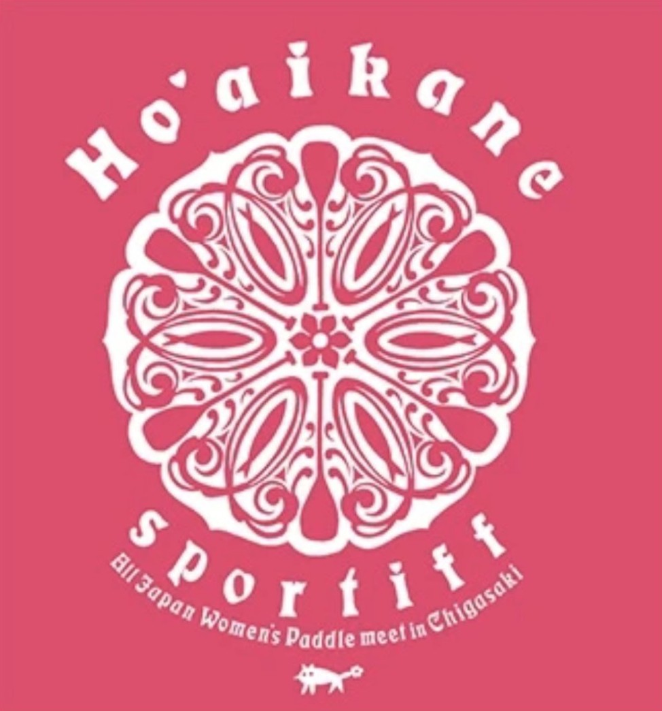

HO'AIKANE
Beyond the Waves, Beyond Myself

このページは準備中です。【仮】と書かれた内容は仮のもので、確定した情報ではありません。
ABOUT
Ho'aikane（ホアイカネ）は、茅ヶ崎で開かれる女性のためのパドルレース「All Japan Women's Paddle Meet」です。レースの主役は女性たち。全国から集まったパドラーが、茅ヶ崎の海で力を合わせます。
第11回大会は、参加してくださった皆さまのおかげで無事に開催することができました。次回の日程や要項は、決まりしだいこのページでお知らせします。【仮】
OUTLINE
| 項目 | 内容 |
|---|---|
| 大会名 | All Japan Women's Paddle Meet Ho'aikane |
| 開催地 | 茅ヶ崎 |
| 開催日 | 準備中【仮】 |
| クラスと距離 | 準備中【仮】 |
| 参加費 | 準備中【仮】 |
| エントリー | 準備中【仮】 |
詳しい内容は、下の2025年大会サイトをご覧ください。